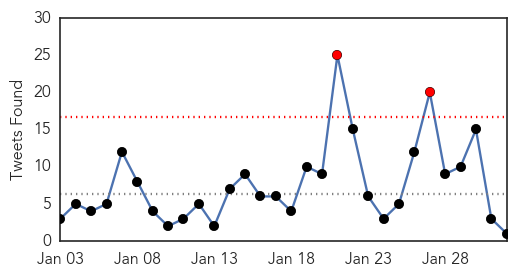

Ebola
30-Day Web Trend
0 alerts, 0 warnings

30-Day Twitter Trend
2 alerts, 0 warnings

Article Locations

Article Confidences

Top Articles:
- 0.999
- Utah Business
- 0.999
- Ebola Czar Leaves
- 0.999
- Number of new Ebola cases falls to lowest level since late June
- 0.997
- Sudan Vision Daily
- 0.996
- Ebola’s aftereffects in Pittsburgh
- 0.994
- Government must be more committed to improving the health sector
- 0.994
- Humanitarian groups say Ebola response must remain vigilant despite declining cases 30/01/2015
- 0.990
- Gloucester man in Oxford Ebola vaccine trial
- 0.989
- From the front lines of Ebola
- 0.989
- World's Largest Ebola Unit Dismantled As Outbreak Retreats
- 0.989
- Ebola epidemic far from over, but tide is turning
- 0.984
- New Africa Regional Chief Aims to Shake Up Maligned WHO Office
- 0.984
- New Africa Regional Chief Aims to Shake Up Maligned WHO Office
- 0.984
- New Africa Regional Chief Aims to Shake Up Maligned WHO Office
- 0.983
- Ebola cases drop, focus shifts to ending epidemic
- 0.975
- As Ebola ebbs in Africa, focus turns from death to life
- 0.973
- Sudan Vision Daily
- 0.967
- Ron Klain on His Tenure As America’s Ebola Czar -- NYMag
- 0.966
- A Coventry pathologist has returned from helping patients with Ebola in West Africa
- 0.959
- Ebola czar Klain to leave Feb. 15 after leading US response to outbreak
- 0.959
- In pursuit of next-generation Ebola stockpile vaccines
- 0.932
- Guinea: Guinea Ebola Situation Report 28 January 2015
- 0.929
- Eating and Praying in a Terrifying Battle With Ebola
- 0.925
- Ebola-hit Liberia delays school reopening
- 0.909
- Kampala begins testing of candidates for Ebola vaccine -
- 0.907
- Ebola-hit Liberia delays school reopening
- 0.897
- Five Things You Need To Know About Africa’s First Female Head of WHO AFRO
- 0.886
- QRC begins Ebola awareness campaign in Mauritania
- 0.879
- Plane, which carried Russian with suspected Ebola, disinfected prior to takeoff for Moscow
- 0.846
- Diseases without borders in a world of risks
- 0.844
- Diagnosis of Russian with suspected Ebola to be clear within 3-4 days
- 0.708
- Devant les leaders africains, le Secrétaire général parle des droits de la femme, de la lutte contre Ebola, du rétablissement de la paix, du combat contre le terrorisme et du respect de la constitutio
- 0.650
- Uganda sued over plan to ‘export’ 240 health workers
- 0.633
- Kenya : Robert Mugabe should soften stance against the West
- 0.611
- EBOLA Has Not Put an End to Female Circumcision in Sierra Leone
- 0.611
- EBOLA Has Not Put an End to Female Circumcision in Sierra Leone
- 0.579
- UN chief calls for solidarity against Ebola to remain on course
- 0.554
- Nigeria-based writer trolls ‘measles-ravaged country America’ on Twitter
- 0.537
- Soldiers back at base in Northern Ireland following Ebola mission
- 0.530
- China approves new polio vaccine, shows innovative muscle
Top Tweets:
- 0.925
- RT: Ebola is not the end of the world & it can be beaten: Nurse & Ebola survivor speaks at this week http://t.co/hLoa58Crtx Ebola…
- 0.923
- How Bad Data Fed the Ebola Epidemic - New York Times http://t.co/9gZMgxp7kT ebola EVD
- 0.912
- In pursuit of next-generation Ebola stockpile vaccines - Reuters http://t.co/p9c4nyT0GT ebola EVD
- 0.825
- As Ebola Ebbs in Africa, Focus Turns From Death to Life - New York Times http://t.co/R8RhFAt0iw ebola EVD
- 0.799
- Returning to 'The Ebola School' - Washington Post http://t.co/p3PjJ2WwgA ebola EVD
- 0.799
- Returning to 'The Ebola School' - Washington Post http://t.co/LMiZv6Mbng ebola EVD
- 0.794
- War on Ebola: Victory or “Mission Accomplished”? - legal Insurrection (blog) http://t.co/xKJCWvHO92 ebola EVD
- 0.735
- Kids in Liberia go back to school — in a building where dozens died of Ebola - Washington Post http://t.co/XP9oQndaNb ebola EVD
- 0.651
- New British Ebola case as military healthcare worker is flown back for monitoring - Daily Mail http://t.co/InHBVRSCRb ebola EVD
Unknown
30-Day Web Trend
0 alerts, 0 warnings

30-Day Twitter Trend
3 alerts, 0 warnings

Article Locations

Article Confidences

Top Articles:
- 0.984
- Number of Bird Flu Cases in China's Guangdong Province Reaches 30
- 0.967
- Finally CDC Have Issued A Flu Vaccine Apology
- 0.917
- Chicago Tribune
- 0.917
- Chicago Tribune
- 0.917
- Chicago Tribune
- 0.917
- Chicago Tribune
- 0.910
- 9 tips to prevent the flu during pregnancy
- 0.910
- The world windows to Thailand
- 0.866
- Two bombs explode outside luxury Bangkok mall, no injuries -Thai police
- 0.866
- Al Jazeera journalist Mohamed Fahmy expected to be released from Egypt jail soon
- 0.845
- Enterovirus may be linked to paralysis in 12 Colorado children, study finds
- 0.787
- Health horror for tiny town as six people hit by mystery rare disease
- 0.760
- Kennesaw State University reports TB case in student, TST testing scheduled for Tuesday
- 0.753
- Eliminating Leprosy Needs Renewed Efforts, Greater Push
- 0.713
- 'Atypical' case of mad cow disease confirmed in Norway
- 0.702
- OPEN LETTER: Response to Minister Motsoaledi’s statement on forensic labs (DA
- 0.702
- Nurhi Donates Vehicle to Edo Health Ministry
- 0.698
- S. Korea reports another suspected foot-and-mouth case among cattle
- 0.691
- Investigation launched into suspected cluster of rare disease which may have struck down six victims in ONE tiny town
- 0.604
- South Sudan president and rebel leader sign ceasefire deal
- 0.604
- Japan in shock as IS group claims killing of Kenji Goto
- 0.604
- French nostalgic for DSK despite pimping charges
- 0.604
- Egypt deports jailed Al-Jazeera journalist back to Australia
- 0.604
- Boko Haram, Nigerian troops battle for control of Maiduguri
- 0.592
- Decline in leprosy cases across the Caribbean
- 0.558
- Three new polio cases reported - Pakistan
Top Tweets:
-
No tweets found for Feb 01, 2015